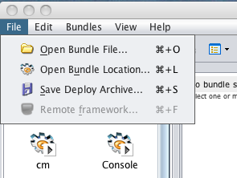
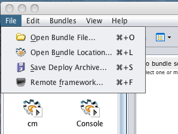

The "Remote Framework" in the Knopflerfish Desktop
How to activate the remote framework in the Knopflerfish framework.
Description

The Knopflerfish Desktop has the ability to remote control
frameworks running on other computers or devices (including headless
devices that cannot run the desktop them selves). This document
describes how to activate this feature.
Typically, the "Remote framework…" menu item (in the File menu)
is grayed out. The reason for this is that, typically, the remote
framework service that the desktop is looking for is not present. To
connect to a remote framework, the desktop needs an implementation
of the org.knopflerfish.service.remotefw.RemoteFramework
interface. This implementation decides which protocol to use and
handles the communication.
The implementation described here uses kSOAP 2, which is a
small-footprint SOAP implementation on top of kXML. Knopflerfish
also provides an alternative implementation using Axis 1 for
the SOAP layer, see SOAP
Remote Framework.
The remote framework provides remote access to almost all
functionality in the desktop (including the log tab and the
console). The exceptions are preferences and events.
Terminology
- Server
- The server in this context is the remote controlled framework
that waits for connections to its SOAP servlet.
- Client
- The client in this context is the framework that is running
the desktop that is connecting to and controlling the server.
Needed Bundles
To use the remote framework functionality there are four bundles
that will be needed. Two of these bundles are used on both the
server and the client.
Common Bundles
- ksoap-osgi - Provides the kSOAP libs and registers the
SOAP servlet.
- ksoap_remotefw - Supplies the RemoteFramework
implementation (on the client) and handles.
Server Bundles
Other bundles needed on the server:
- remotefw_api - Provides the
org.knopflerfish.service.remotefw package (in cases where the
server executes on a JVM without swing the desktop can not be
used.
Client Client
Other bundles needed on the client:
- desktop - The user interface. Also provides the
org.knopflerfish.service.remotefw package.
Since the SOAP implementation uses a servlet an HttpService must be
present in the server framework, the Knopflerfish bundles
HTTP (http_all-2.1.5.jar or later) and JSDK
(jsdk_api-2.5.jar or later) provides the HttpService and the needed
API classes. As usual, some of these bundles also depend on a number
of standard bundles (including the Knopflerfish util bundle).
Configuration
The configuration is done with framework properties. All of them
have reasonable defaults and things will work without configuration.
Server
- org.osgi.service.http.port - Defines the port for the
HTTP server. Defaults to 80 (8080 on UNIX like OS's).
- org.knopflerfish.soap.remotefw.server - Can be set to
true on the client just to make it clear that it is a
server. Defaults to true.
- org.knopflerfish.soap.remotefw.client - Can be set to
false on the server. No RemoteFramework service will be
registered and the desktop (if installed) will not be able to
use the remote framework feature. Defaults to true.
- org.knopflerfish.soap.remotefw.server.debug - If set to
true, causes the ksoap bundles to print some debug
information. Defaults to false.
Client
- org.knopflerfish.soap.remotefw.client.eventinterval -
Defines the time (in ms) between polls to get events and log
entries from the server. Defaults to 3000.
- org.knopflerfish.soap.remotefw.server - Can be set to
false on the client. No servlet will be registered and
other desktops will not be able to connect to this
framework. Defaults to true.
- org.knopflerfish.soap.remotefw.client - Can be set to
true on the client just to make it clear that it is a
client. Defaults to true.
- org.knopflerfish.soap.remotefw.client.sendlocalpaths -
Set to true to avoid sending base64 encoded bundles when
installing. Defaults to false.
- org.knopflerfish.soap.remotefw.client.debug - If set to
true, causes the ksoap bundles to print some debug
information. Defaults to false.
Quick start
To make it easy to start using the remote framework two xargs-file
fragments that can be used when starting a server / client
framework are provided. Save the linked xargs-files in the
osgi-directory of a Knopflerfish installation and check that
the version part of the file name of the bundles installed, started,
or uninstalled by those xargs-fragments matches the bundle names in
the Knopflerfish installation that is used.
To start the server framework type:
java -jar framework.jar -xargs init.xargs --xargs server.xargs
To start the client framework type:
java -jar framework.jar -xargs init.xargs --xargs client.xargs
Connecting

When all the above is done and you start your frameworks, you'll
find that the Remote framework… menu item is
available. Click on it.
Enter the address to the remote framework. You should only enter the
server name and the port, e.g. http://localhost:8080. The
rest is added automatically.
Click OK.
The desktop will be closed and reopened with the address to the
remote framework in the title bar (e.g. Knopflerfish OSGi
desktop (http://localhost:8080)). If the parenthesis are empty,
something is wrong and you need to consult your log.
Known Problems
If the remote framework is shut down (which can be done remotely by
running the console command "framework shutdown"), the desktop may
behave strangely.
Log entries can appear in unexpected order.
See Also
SOAP - WebServices
kSOAP Remote Framework
SOAP Remote Framework